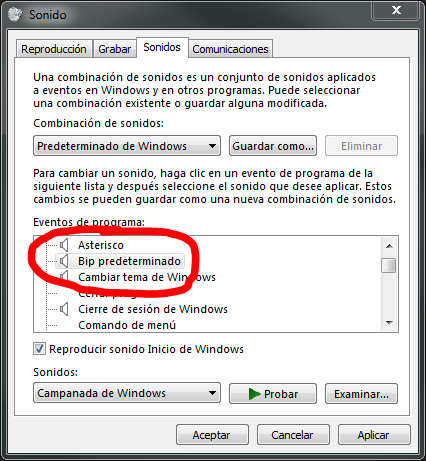

Configuración local del terminal TPV¶
Esta es configuración del propio ordenador.
Como mínimo hay que identificar el terminal para poder vender.
Habilitar sonido¶
Habilita el sonido de confirmación de la lectura en la pantalla de venta.
El sonido hay que configurar en la configuración de sonido de panel de control de windows. Reproduce Bip predeterminado para confirmar y Exclamación para el error.
